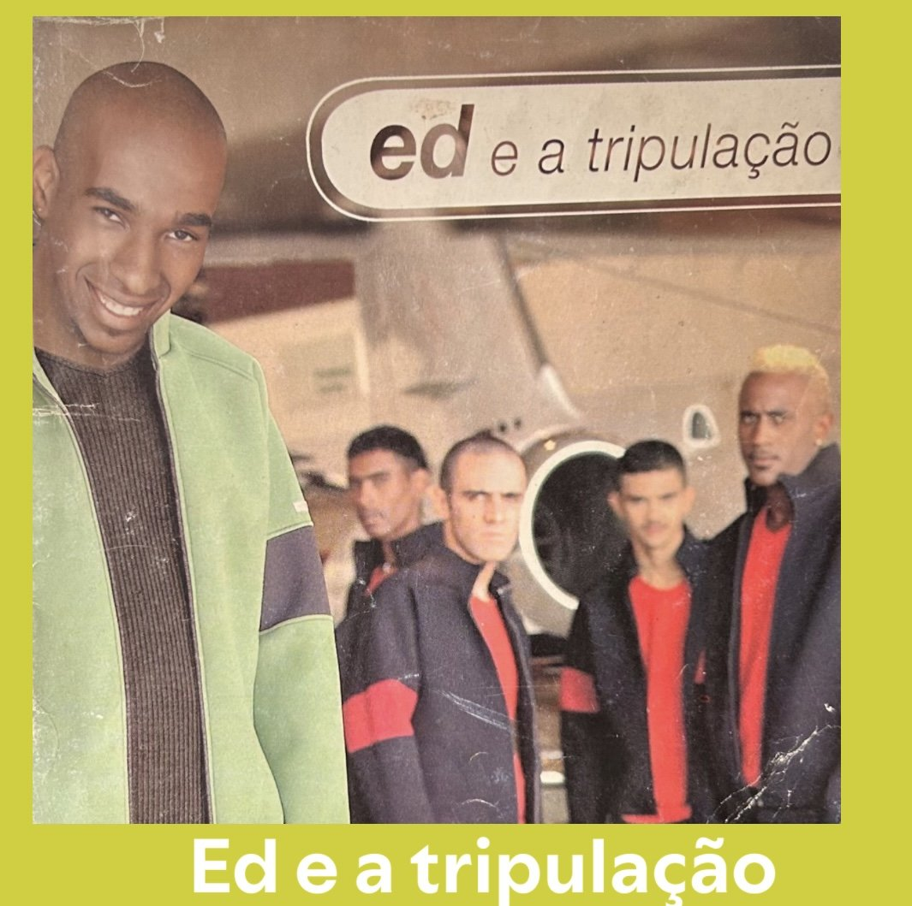
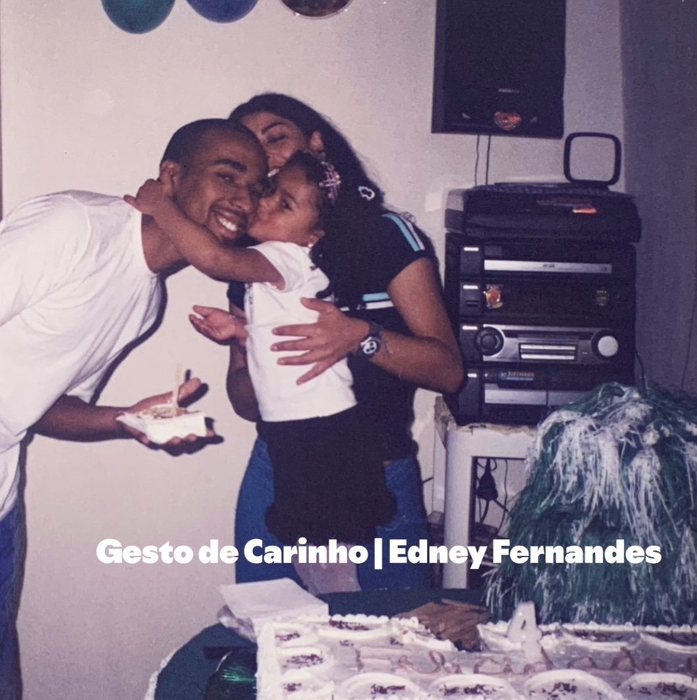
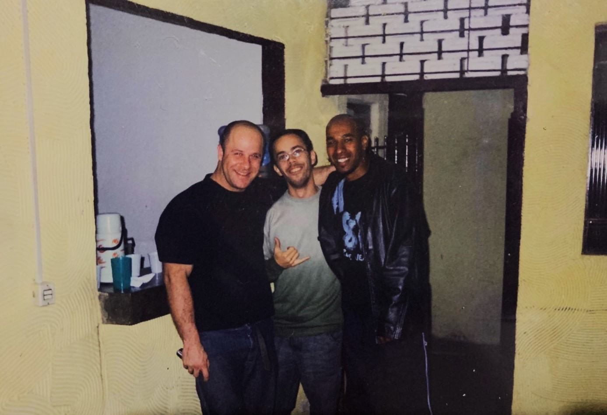
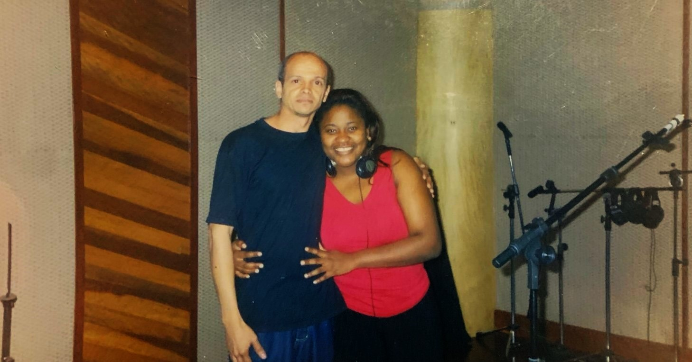
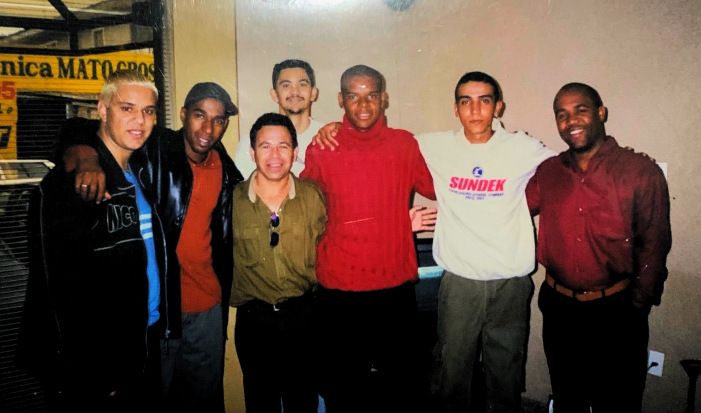
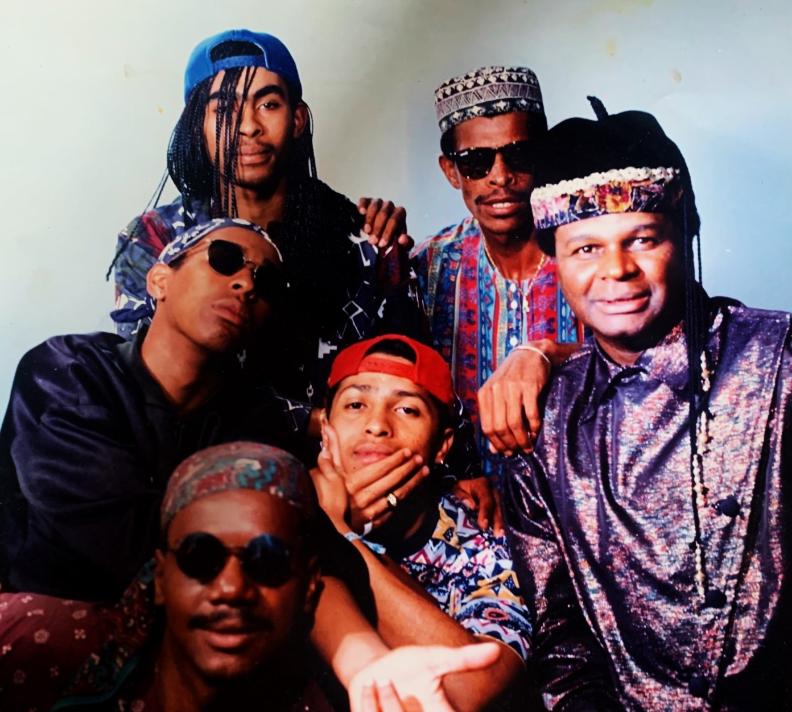

Memorial 01
Manifesto
Existem vozes que, mesmo depois da despedida, não se calam.
Elas atravessam o invisível, o imaterial, o finito, e continuam ecoando pelos cantos, como se o tempo não tivesse fim.
Nos fazem lembrar o que é sentir, o que é viver, e despertam memórias afetivas.
Edney Fernandes foi uma dessas vozes — um menino do samba que sonhou alto demais pra caber só nesta vida.
Cantou o amor, a saudade, a beleza do cotidiano, e transformou tudo em melodia, deixando o próprio coração exposto em cada nota.
Mesmo partindo cedo, sua presença nunca foi ausência. Porque quem canta com verdade, permanece.
Hoje, sua voz continua ecoando nas rodas de samba, nas rádios, nas lembranças e nas descobertas.
Não apenas como lembrança, mas como presença — pela pessoa que foi, pela sensibilidade com que viveu e compôs.
Este projeto é um reencontro: entre o passado e o futuro, entre a memória, a saudade e a vida.
Edney Fernandes — A Voz e o Tempo. 🌻
Discografia | Playlists
Links oficiais para ouvir no Spotify e YouTube.



Composições
Obras registradas e referências de catálogo.
Acervo
Role para baixo: o acervo desliza para o lado.

Memorial 02

Memorial 03

Memorial 04

Memorial 05
Memorial
Fotografias e registros do acervo.
Making of
Áudios e registros de estúdio (quando disponíveis).